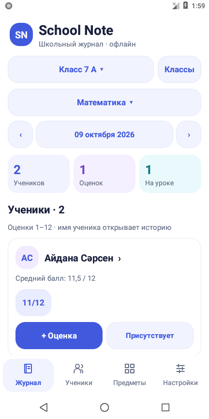

Все твои классы
Создавай классы, добавляй учеников и выбирай предметы.
Оценки, ученики и посещаемость — в одном удобном журнале на твоём телефоне.

Создавай классы, добавляй учеников и выбирай предметы.
5, 10, 12, 100 баллов или свой максимум. У каждой оценки есть дата.
Отмечай присутствие, отсутствие, опоздание или уважительную причину.
Без интернета, аккаунтов и рекламы. Резервная копия переносит журнал на другой телефон.
Открой эту страницу на телефоне с Android 8.0 или новее и нажми «Скачать APK».
Если Android попросит, разреши установку из этого источника. Затем нажми «Установить».
Добавь учеников и предметы. Язык и шкалу оценок можно выбрать в настройках.